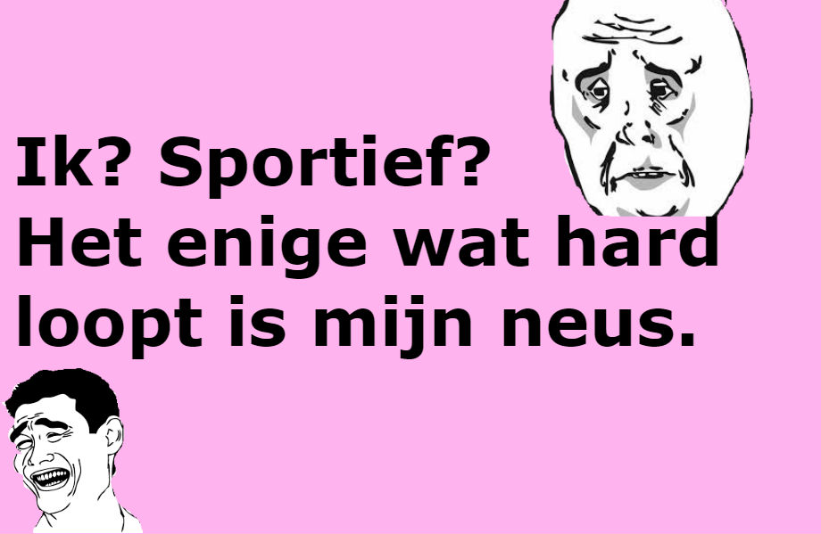
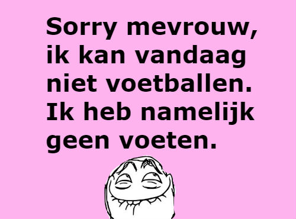

- Was ik maar gymleraar geworden: iedere dag in mijn jogginbroek rondlopen en vervelende kinderen ballen in het gezicht gooien.
- Fietsen is gezond, dus eet meer fiets.
- Ik ben vorig jaar 5 kilo kwijtgeraakt, ik heb ze dit jaar teruggevonden.
- Ik ben zo slecht in sport, dat ik er goed in word.
- Ik kan niet sporten door mijn ziekte, slechte conditie.
- Zweet is slechts vet dat huilt.
- De sportschool, een combinatie van de twee ergste dingen in mijn leven.
- Ken je dat gevoel dat wanneer je wakker wordt en heel veel zin hebt om te joggen? Ik ook niet.
- Ik kan niet wegrennen van mijn problemen. Zo sportief ben ik niet.
- Dat gevoel wanneer je cheat en vervolgens nog steeds een 1 krijgt.


- Gym werd pas leuk toen de docente vroeg waar ze de schaakmat kon vinden.
- Mijn gymdocent zei dat als ik mij best deed altijd een voldoende voor gym zou halen, toch stond ik een vier.
- Ooit viel ik bij gym. Niet omdat iemand mij tackelde, maar omdat ik struikelde over mijn eigen voet.
- Wanneer het lopen naar de gymzaal je meer energie vergt dan de gymles zelf.
- Gymleraar de twee ergste beroepen van de wereld.
- Mensen die zeggen dat je voor gym geen huiswerk hebt. Hoe noem je deze spierpijn dan!?